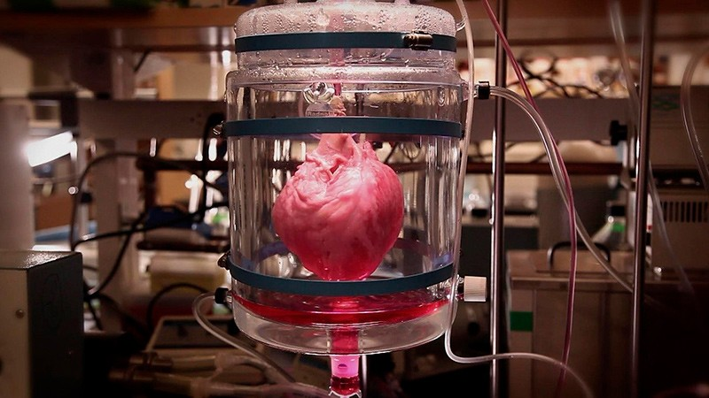

Органы по требованию – это искусственные органы, созданные из клеток пациента, которые заменяют поврежденный или неисправный орган. Такие органы создаются при помощи тканевой инженерии, которая использует биоматериалы, клетки и факторы роста, чтобы создать новые органы.
Технологии тканевой инженерии, которые используются для создания органов по требованию, существуют уже несколько лет. Однако, только недавно они стали доступны для массового использования. Сегодня, органы по требованию уже успешно используются в медицинской практике для трансплантации почек, печени, сердца и других органов.
Одним из преимуществ органов по требованию является то, что они создаются из клеток пациента, что уменьшает риск отторжения и предотвращает необходимость в длительной иммуносупрессивной терапии. Кроме того, использование органов по требованию сокращает время ожидания на трансплантацию, что может спасти жизни тысячам людей, ожидающим органы.
